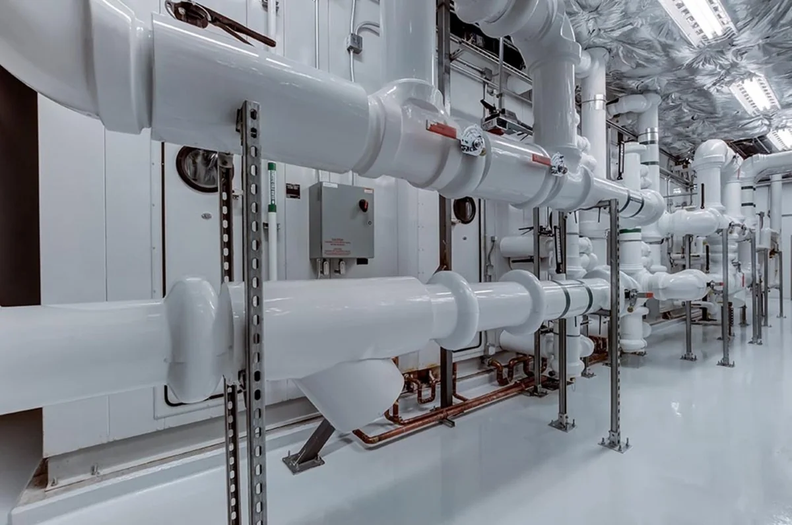

AFRA / درباره افرا
افرا؛ پیوند نیاز صنعتی
با گزینههای تأمین.
تمرکز افرا تجارت ماد بر تأمین بینسازمانی تجهیزات، قطعات یدکی و مواد صنعتی است. مشخصات فنی را روشن میکنیم، گزینههای تأمین را بررسی میکنیم و پیشنهادها و فرآیند تحویل را با طرفهای مرتبط هماهنگ میکنیم.

افرا تجارت ماد
مبنای همکاری
مبنای همکاری ما مشخصات روشن، ارتباط مستقیم، مقایسه مستند و پیگیری منظم است. موجودی، مبدأ، اصالت، مدارک و زمان تحویل برای هر استعلام بهصورت جداگانه بررسی میشود.
مشخصات روشنمقایسه مستندپیگیری منظم
A↗افرا تجارت ماد
FROM RESOURCES TO PROGRESS
افرا تجارت ماد
مدیریت و ارتباطات
درخواست شما، نقطه شروع ماست.
مشخصات را بفرستید. مسیر تأمین را با هم روشن کنیم.
شماره فنی، مشخصات یا شرح نیازتان را آماده کنید؛ از همینجا شروع کنید.